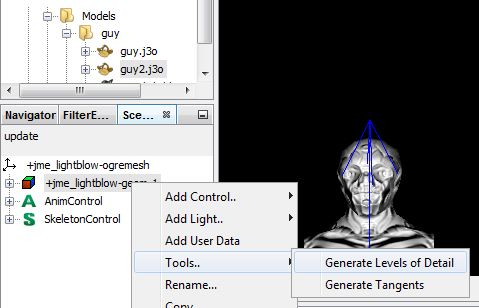

A mesh with a high level of detail has lots of polygons and looks good close up. But when the mesh is further away (and the detail is not visible), the high-polygon count slows down performance unnecessarily.
One solution for this problem is to use high-detail meshes for objects close to the camera, and low-detail meshes for objects far from the camera. As the player moves through the scene, you must keep replacing close objects by more detailed meshes, and far objects by less detailed meshes. The goal is to keep few high-quality slow-rendering objects in the foreground, and many low-quality fast-rendering objects in the background. (Experienced users can compare this approach to JME’s TerraMonkey terrain system, which internally uses the specialized GeoMipMapping algorithm to generate a terrain’s Levels of Detail.)
You see now why you may want to be able to generate Levels of Detail for complex Geometries automatically. JME3 supports a Java implementation of the Ogre engine’s LOD generator (originally by Péter Szücs and Stan Melax): You use jme3tools.optimize.LodGenerator in conjunction with com.jme3.scene.control.LodControl.
For a demo, run TestLodGeneration.java from JmeTests, then press +/- and spacebar to experiment. The following screenshots show a monkey model with three reduced Levels of Detail:

Usage
To activate this optimization:
Pick a reduction method and values for the Geometry. (Trial and error…)
Generate LODs for the Geometry, either in the SDK or in code.
Add an LOD control to the Geometry.
Pick Reduction Methods and Values
There are several reduction methods to generate a low-polygon version from a high-polygon model. Don’t worry, the reduction does not modify the original model.
| Reduction Method | Description | Reduction Value |
|---|---|---|
LodGenerator.TriangleReductionMethod.COLLAPSE_COST | Collapses polygon vertices from the mesh until the reduction cost (= amount of ugly artifacts caused) exceeds the given threshold. | 0.0f - 1.0f |
LodGenerator.TriangleReductionMethod.PROPORTIONAL | Removes the given percentage of polygons from the mesh. | 0.0f - 1.0f |
LodGenerator.TriangleReductionMethod.CONSTANT | Removes the given number of polygons from the mesh. | integer |
If you don’t know which to choose, experiment. For example start by trying COLLAPSE_COST and .5f-.9f.
Generate LOD
You must generate and cache several LODs for each mesh, ranging from many to few polygons. The LOD generator algorithm attempts to collaps vertices automatically, while avoiding ugly artifacts. The LOD generator doesn’t generate new meshes, it only creates separate reduced index buffers for the more highly reduced levels.
If you create geometries manually (3D models), use the SDK to generate LODs.
If you create geometries programmatically, generate LODs from your Java code.
Generating LODs in the SDK
The SDK contains a user-friendly interface to generate LODs for a model (.j3o file).
Open the Projects or Files window.
Select the .j3o file in the
Project Assets/Modelsdirectory.Choose
if the SceneExplorer is not open. Info about the selected model is now displayed in the SceneExplorer.RMB select the model in SceneExplorer. Choose the
menu.
The
Generate LODsettings wizard opens:

Choose a reduction method and reduction values for one or more levels.
Enter higher reduction values for higher levels.
Click Finish to generate the LODs for this model.
The LODs are saved in the .j3o model file.
Choose |
Generating LODs in Code
The jme3tools.optimize.LodGenerator utility class helps you generate LODs for an arbitrary mesh (a Geometry object) programmatically from your Java code. You create and bake one LodGenerator for each Geometry.
LodGenerator lod = new LodGenerator(geometry);
lod.bakeLods(reductionMethod,reductionValue);The LODs are stored inside the Geometry object.
Example: How to generate an LOD of myPrettyGeo’s mesh with 50% fewer polygons:
LodGenerator lod = new LodGenerator(myPrettyGeo);
lod.bakeLods(LodGenerator.TriangleReductionMethod.PROPORTIONAL,0.5f);Activate the LOD Control
After generating the LODs for the geometry, you create and add a com.jme3.scene.control.LodControl to the geometry. Adding the LodControl activates the LOD optimizaton for this geometry.
LodControl lc = new LodControl();
myPrettyGeo.addControl(lc);
rootNode.attachChild(myPrettyGeo);The LodControl internally gets the camera from the game’s viewport to calculate the distance to this geometry. Depending on the distance, the LodControl selects an appropriate level of detail, and passes more (or less) detailed vertex data to the renderer.
Impact on Quality and Speed
| Level number | Purpose | Distance | Rendering Speed | Rendering Quality |
|---|---|---|---|---|
Level 0 | The original mesh is used automatically for close-ups, and it’s the default if no LODs have been generated. | Closest | Slowest. | Best. |
Level 1 | If you generated LODs, JME3 uses them automatically as soon as the object moves into the background. | The higher the level, | The higher the level, | The higher the level, |